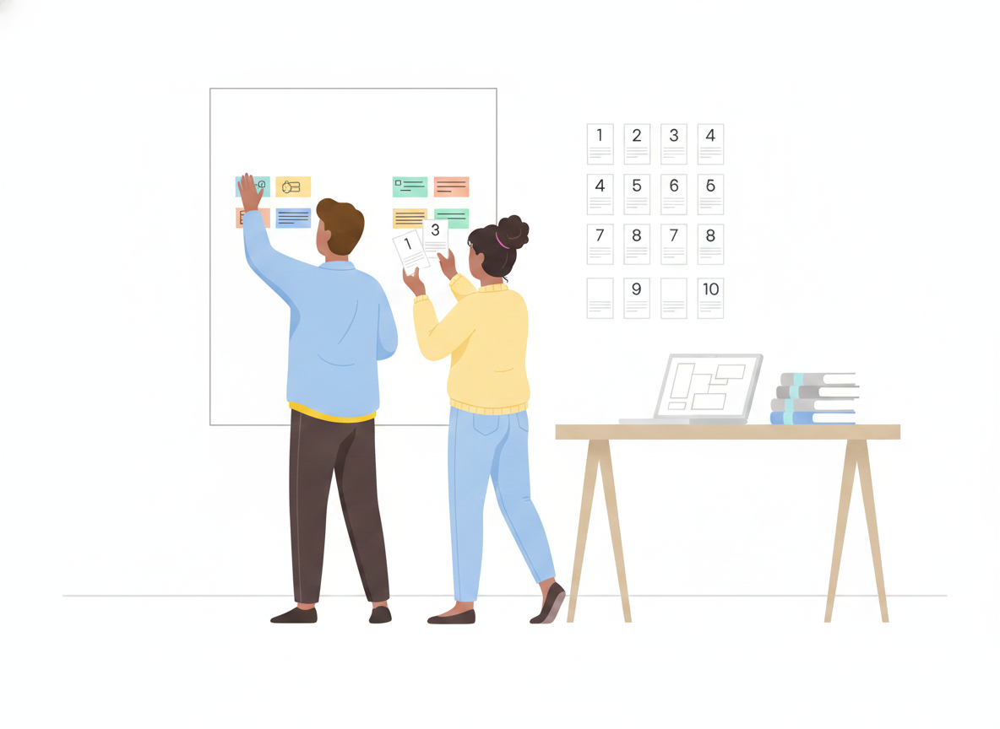
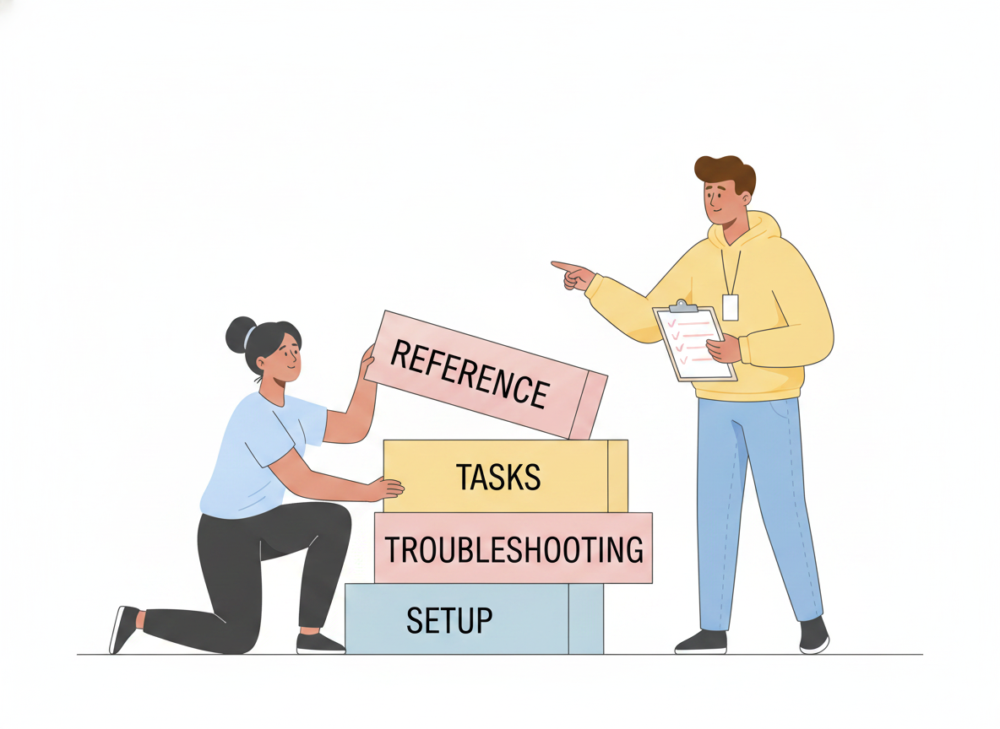

How to Write a User Manual: A Step-by-Step Template

You know your product inside out. Your customers don't — yet. A good user manual closes that gap, and the fastest way to write one is to start from a template instead of a blank page.
The trouble is that most manuals are written the way the product was built: feature by feature, in the order the team happened to ship them. Readers don't think that way. They arrive with a task — set it up, fix this, get that one thing working — and they want the shortest path to done. This guide gives you a reusable user manual template, section by section, plus the writing habits that make each section worth reading.
What is a user manual template?
A user manual template is a reusable structure — a set of standard sections in a sensible order — that you fill in for each product or release. It saves you from re-deciding the outline every time, keeps your manuals consistent, and makes sure you never forget the parts readers rely on, like safety notes or troubleshooting.
Think of it as the skeleton. The template decides what goes where; your product knowledge fills in the muscle.
The user manual template: sections to include
Here is a structure that works for software, hardware, and physical products alike. International guidance for instructions-for-use treats information as something people need across the whole life of a product — from first setup through everyday use, troubleshooting, and eventually retiring it — so a complete manual covers that whole arc, not just the happy path.
- Title and version. Product name, model or release number, and the manual's own version. Readers need to know they're looking at the right instructions for the thing in front of them.
- Introduction. One short paragraph: what the product does and who this manual is for. Set expectations, then get out of the way.
- Safety and important notices. Anything that prevents harm, data loss, or an expensive mistake goes up front and stays visible. Don't bury a warning inside step 14.
- What's in the box / what you need. Parts, accessories, system requirements, accounts, or permissions. List prerequisites before the first step, not halfway through it.
- Getting started / setup. The shortest route from "just unpacked" or "just signed up" to a first working result.
- Core tasks (how-to section). The heart of the manual — one task per topic, each written as numbered steps. This is where most of your readers live.
- Troubleshooting and FAQs. Common problems, what causes them, and how to recover. Treat this as essential, not an afterthought.
- Reference. Specifications, settings, glossary, and anything readers look up rather than read straight through.
- Support and next steps. Where to get help, how to send feedback, and where to find updates.

Not every product needs all nine, and a small app won't need a "what's in the box" section. Cut what doesn't apply — but cut on purpose, not by forgetting.
How to write each section so people actually read it
A template gives you the bones. These habits give you a manual people finish.
Organize around tasks, not features
Decades of usability research point the same direction: people read documentation to do something, and help is most effective when it's short, searchable, focused on the user's immediate goal, and built from concrete steps. So name your sections after jobs ("Connect a new device," "Reset your password"), not after menus or modules. A reader scanning your contents should see their own goal staring back at them.
This is the core of the minimalist approach to documentation pioneered by researcher John Carroll: deliver short, task-oriented chunks rather than one long monolith, and let people start doing real work right away instead of reading a wall of background first.
Write one action per step
Break every procedure into single-action steps. Each numbered step should ask the reader to do exactly one thing. "Open Settings, scroll to Security, and enable two-factor" is three steps wearing one number — split it. Short steps are easier to follow, easier to screenshot, and far easier to translate.
Use plain, direct language
Plain-language practice — the same standard public agencies are held to — means writing for your specific reader, using everyday words, short sentences, and the active voice. Say "Press the power button," not "The power button should be depressed by the user." Define any term the first time it appears, and keep acronyms to a minimum. If an eighth-grader couldn't follow it, simplify.
Show, don't just tell
Add a screenshot or a simple diagram wherever a reader might wonder "which button?" Visuals every few hundred words break up the text and cut the chance of a wrong turn. Caption them so they make sense on their own.
Plan for mistakes
Good documentation assumes readers will slip up — and helps them recover. For each major task, answer the obvious "what if it doesn't work?" right where it happens, or link to the troubleshooting entry that does. An error the manual already anticipated stops being a support ticket.
Keep the manual current
A template makes a manual easy to start. Keeping it accurate is the harder, longer job — and it's where most documentation quietly fails. When the product changes and the manual doesn't, readers stop trusting it and start contacting support instead.
A few habits keep a manual honest:
- Make updates part of "done." A feature isn't shipped until its manual section reflects it.
- Keep one source of truth. Maintain a single, versioned home for each manual so there's never a question of which copy is right.
- Watch how it's used. Search terms that return nothing and pages people abandon tell you exactly where to write next.
From template to published manual with Sonat
A template lives in a document; a manual has to reach the people who need it — on the web, on a phone, in their language. That last mile is where Sonat fits.
You draft in a familiar editor (or right in Google Docs and sync it over), then publish to the web with one click — to your own domain if you like. Every reader gets a mobile-responsive page and a fast search box, so they land on the exact step they need. Built-in version history means you can update with confidence and restore any earlier version, and machine translation turns one manual into many languages without rebuilding it. Viewers are always free and unlimited, so reaching more readers never costs more.
In other words: bring the structure from this template, and let the platform handle setup, publishing, search, and translation.
Start with the structure
A user manual is not a creative writing exercise. It's a map from "I just got this" to "I can use it," and the fastest way to draw that map is to start from a proven structure: title, intro, safety, setup, tasks, troubleshooting, reference, support. Fill each section with one-action steps in plain language, show readers where to click, plan for their mistakes, and keep the whole thing current.
Copy the template above, delete what your product doesn't need, and write the first task today. Your future support queue will thank you.